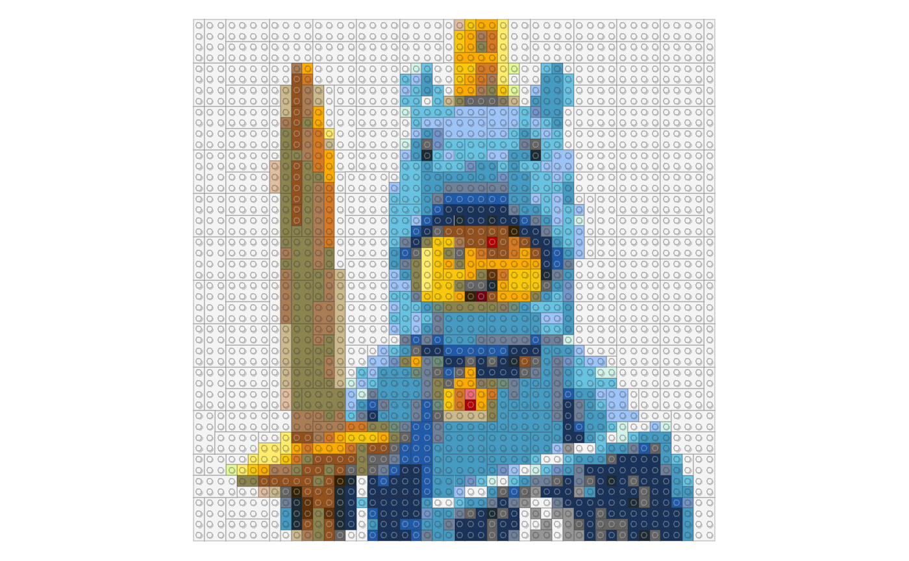
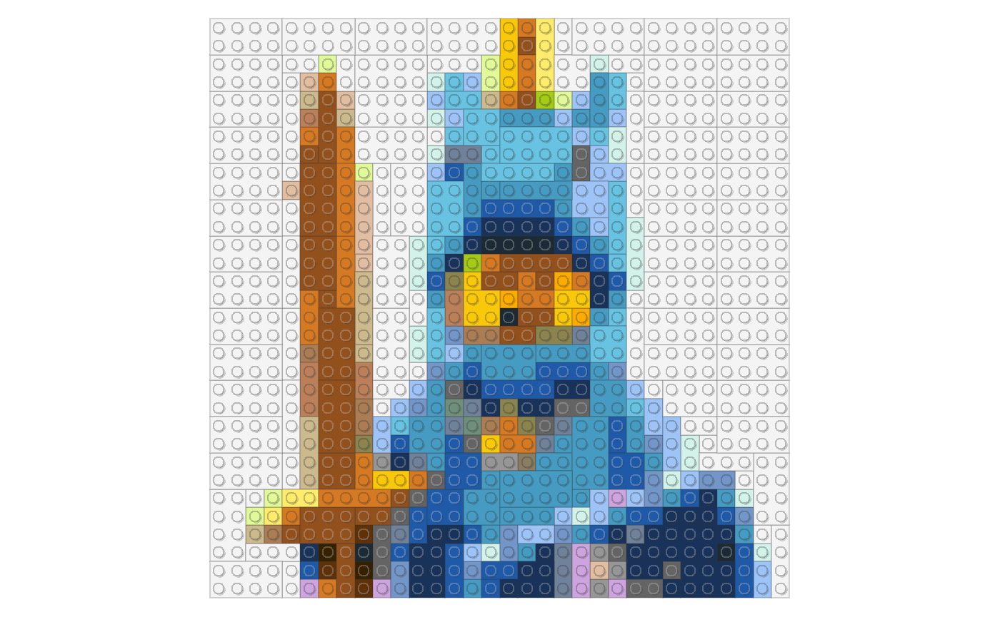
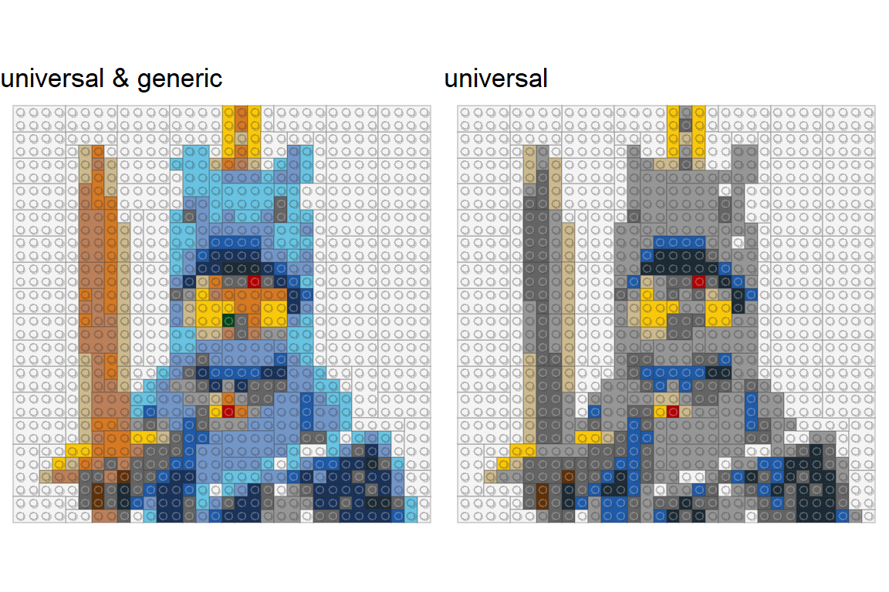
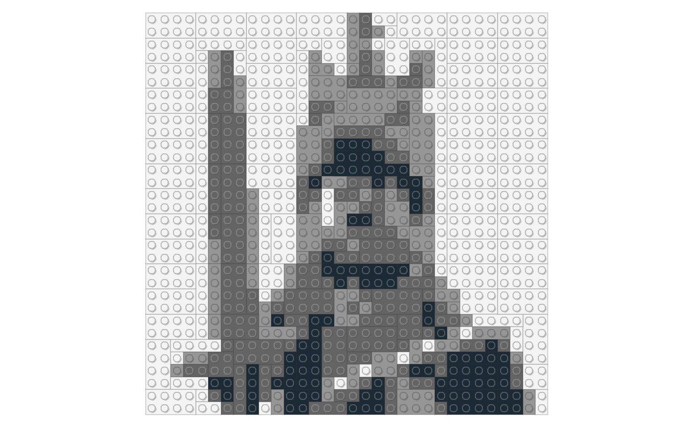
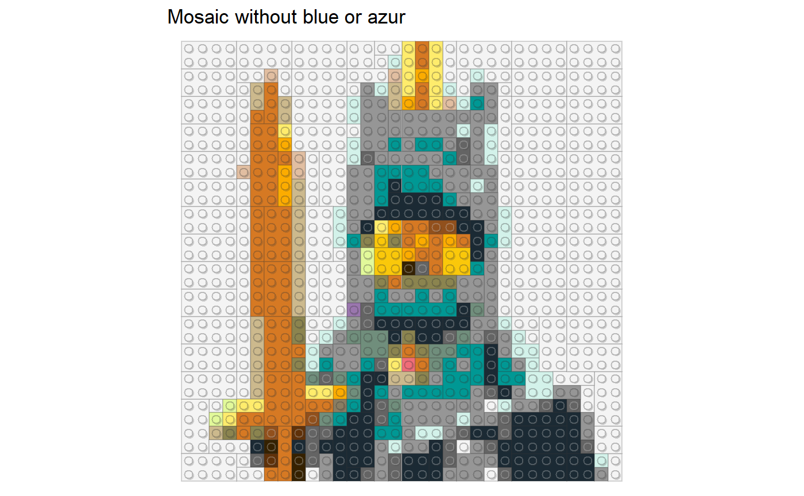
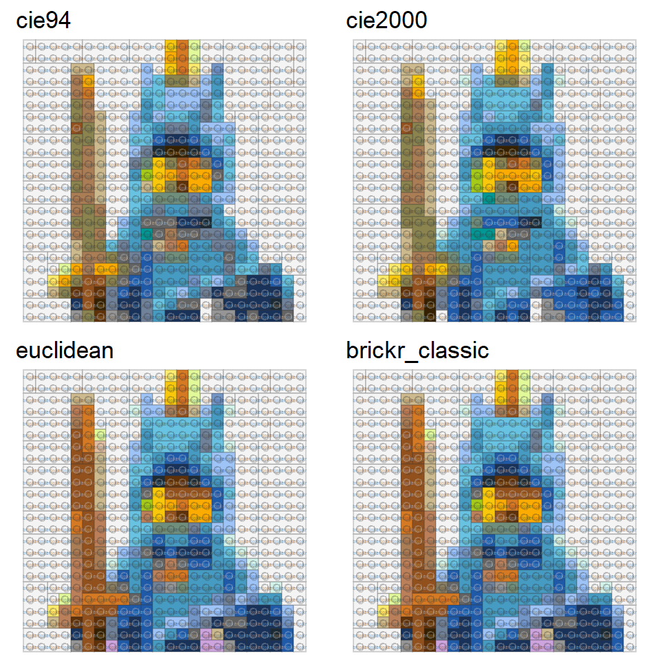
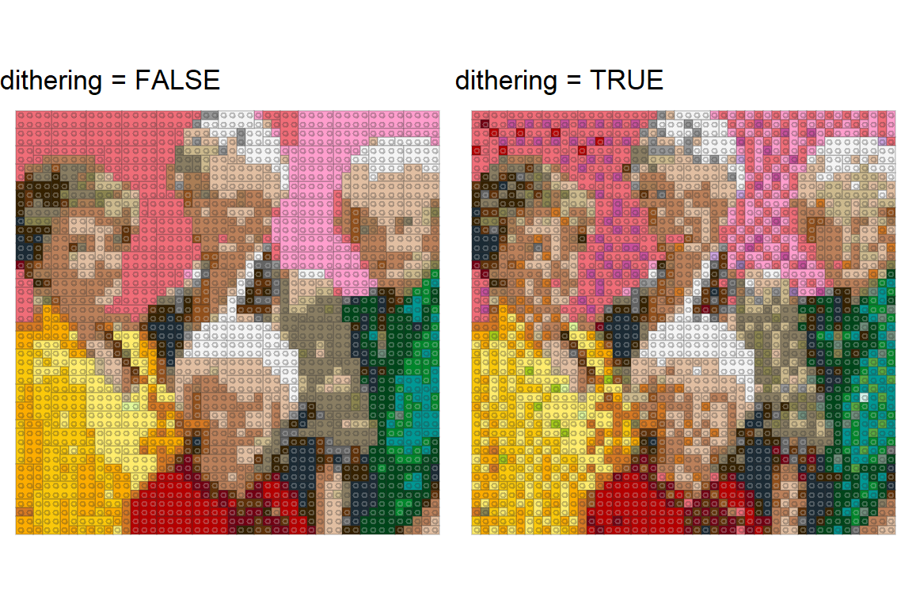
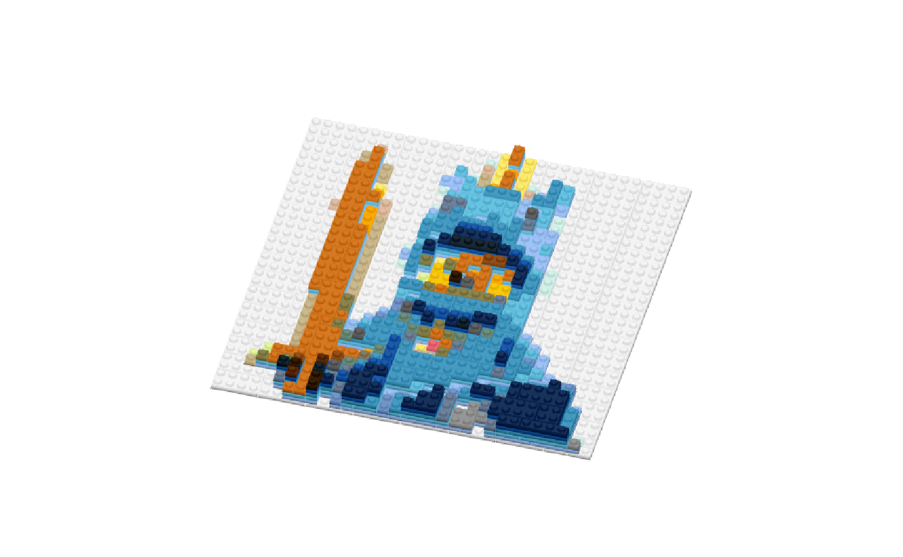

Getting started
You can generate a brickr mosaic object from an image using brickr::image_to_mosaic(). Pass this object to build_mosaic() to construct a visualization of the mosaic.

demo_img = tempfile()
download.file("http://ryantimpe.com/files/mf_unicorn.PNG", demo_img, mode="wb")
mosaic <- png::readPNG(demo_img) %>%
image_to_mosaic()
mosaic %>% build_mosaic()
The default is to create a mosaic with 48 knobs (brick studs) on each side. Change this using the img_size input. A single value will create a square mosaic, while an array of two values represent the width and length.

Colors
A key feature in image_to_mosaic() is the conversion of the original image into colors produced by LEGO. The default is to map each individual pixel to any of the 41 solid brick colors currently produced by LEGO using the CIE94 algorithm. These defaults can be changed.
Color palettes
There are currently 2 main ways to control the color palettes to build mosaics in brickr.
- The
color_paletteinput takes a list of pre-defined palettes to create the mosaic. - The
color_tableinput can take a data frame of specific colors. Usually a subset of the includedlego_colorstable.
Default color palettes
Each of the 41 colors belongs to one of three categories. These categories are mutually exclusive and can be used together.
- ‘universal’ colors are the most common. This list includes white/black/grays/brown and the classic yellow, red, blue, and green colors. All brick sizes should be readily available in these colors.
- ‘generic’ colors are commonly used in LEGO products, though it might be more difficult to find every brick in these colors.
- ‘special’ colors are typically reserved for certain products and it’s likely that bricks might not be actively produced in these colors.
Use the color_palette input in the image_to_mosaic() function to limit the bricks used to any combination of these three categories.
p1 <- png::readPNG(demo_img) %>%
image_to_mosaic(32, color_palette = c('universal', 'generic')) %>%
build_mosaic(title = "universal & generic")
p2 <- png::readPNG(demo_img) %>%
image_to_mosaic(32, color_palette = c('universal')) %>%
build_mosaic(title = "universal")
gridExtra::grid.arrange(p1, p2, layout_matrix = matrix(c(1,2), ncol=2))
Grayscale
For grayscale or black and white mosaics, use color_palette = 'bw'. This creates the mosaic by measuring the brightness of each pixel in the image and mapping it one of the four shades of gray. Use the contrast input to adjust the relative brightness of the pixels.
png::readPNG(demo_img) %>%
image_to_mosaic(32, color_palette = 'bw', contrast = 1.1)%>%
build_mosaic()
Custom color palettes
With the color_table input, it is possible to restrict the colors in the mosaic to a custom palette.
#Remove blue and azure colors from lego_colors
lego_colors_wo_blue <- lego_colors %>%
dplyr::filter(!grepl("blue|azur", tolower(Color)))
png::readPNG(demo_img) %>%
image_to_mosaic(32, color_table = lego_colors_wo_blue)%>%
build_mosaic(title = "Mosaic without blue or azur")
Color matching
brickr uses the farver package to match image colors to the subset of LEGO colors. Technical details of the different algorithms can be found on Wikipedia.
The default algorithm is ‘cie94’, though the other farver options are available using the method input. The farver ‘euclidean’ is not very accurate, so ‘brickr_classic’ returns a manually calculated version for Euclidean RGB distance matching.
c("cie94", "cie2000", "euclidean", "brickr_classic") %>%
purrr::map(~png::readPNG(demo_img) %>%
image_to_mosaic(24, method =.x) %>%
build_mosaic(title = .x )) -> mosaics_by_method
gridExtra::grid.arrange(grobs = mosaics_by_method, layout_matrix =rbind(c(1,2),c(3,4)))
Dithering
When rendering a mosaic from a photographic with many shades of similar colors, using dithering by setting dithering = TRUE will help to add texture to the mosaic and avoid large areas of the same color. This works particularly well for large mosaics, but is purely a stylist preference.
gg_img = tempfile()
download.file("http://ryantimpe.com/files/goldengirls.JPG", gg_img, mode="wb")
c(FALSE, TRUE) %>%
purrr::map(~jpeg::readJPEG(gg_img) %>%
image_to_mosaic(dithering = .x) %>%
build_mosaic(title = paste("dithering =", .x))) -> mosaics_by_dither
gridExtra::grid.arrange(grobs = mosaics_by_dither, layout_matrix = matrix(c(1,2), ncol=2))
3D Mosaics
Passing the mosaic object to bricks_from_mosaic() will render a 3D object, stacking layers of bricks on each other to create an elevated mosaic. By default, the lightest color bricks will be on top, but this can be changed using the highest_el = 'dark' option.
png::readPNG(demo_img) %>%
image_to_mosaic(32) %>%
bricks_from_mosaic(highest_el = "dark") %>%
build_bricks(outline_bricks = TRUE, rgl_lit = FALSE)
#From dput(round(rgl::par3d("userMatrix"),1)) after manual rotation
custom_rotation <- structure(c(0.9, 0.3, -0.3, 0, -0.3, 0.9, -0.3,
0, 0.2, 0.4, 0.9, 0, 0, 0, 0, 1), .Dim = c(4L, 4L))
rgl::par3d(userMatrix = rgl::rotate3d(custom_rotation, 0, 0, pi/4 ,1))